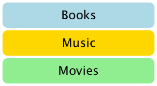
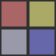
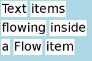
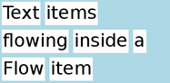

Item Positioners （物品 定位器）
Positioner items are container items that manage the positions of items in a declarative user interface. Positioners behave in a similar way to the layout managers used with standard Qt widgets, except that they are also containers in their own right.
Positioners make it easier to work with many items when they need to be arranged in a regular layout.
Qt Quick Layouts can also be used to arrange Qt Quick items in a user interface. They manage both the positions and the sizes of items on a declarative user interface, and are well suited for resizable user interfaces.
定位器项是管理声明性用户界面中项的位置的容器项。定位器的行为方式与标准Qt小部件使用的布局管理器（layout managers）类似，只是它们本身也是容器。
当需要以常规布局排列时，定位器可以更轻松地处理许多项目。
Qt Quick Layouts也可用于在用户界面中安排Qt Quick项目。它们在声明性用户界面上管理项目的位置和大小，非常适合可调整大小的用户界面。
Positioners （定位器）
A set of standard positioners are provided in the basic set of Qt Quick graphical types:
Qt Quick图形类型的基本集中提供了一组标准定位器：Property used to mirror layout behavior （用于镜像布局行为的属性） | |
Positions its children in a column （将其子项放在一列中） | |
Positions its children side by side, wrapping as necessary （将孩子并排放置，必要时包裹） | |
Positions its children in grid formation （将孩子定位在网格形成中） | |
Provides attached properties that contain details on where an item exists in a positioner （提供附加属性，其中包含有关项目在定位器中的位置的详细信息） | |
Positions its children in a row （将孩子排成一排） |
Column （列）

Column items are used to vertically arrange items. The following example uses a Column item to arrange three Rectangle items in an area defined by an outer Item. The spacing property is set to include a small amount of space between the rectangles.
列（Column）项用于垂直排列项目。以下示例使用Column 项在外部Item定义的区域中排列三个Rectangle项。的间隔（spacing）属性设置为包括的矩形之间的空间量小。import QtQuick 2.0 Item { width: 310; height: 170 Column { anchors.horizontalCenter: parent.horizontalCenter anchors.verticalCenter: parent.verticalCenter spacing: 5 Rectangle { color: "lightblue"; radius: 10.0 width: 300; height: 50 Text { anchors.centerIn: parent font.pointSize: 24; text: "Books" } } Rectangle { color: "gold"; radius: 10.0 width: 300; height: 50 Text { anchors.centerIn: parent font.pointSize: 24; text: "Music" } } Rectangle { color: "lightgreen"; radius: 10.0 width: 300; height: 50 Text { anchors.centerIn: parent font.pointSize: 24; text: "Movies" } } } }
Note that, since Column inherits directly from Item, any background color must be added to a parent Rectangle, if desired.
请注意，由于Column直接从Item继承，因此如果需要，必须将任何背景颜色添加到父Rectangle。Row （行）
Row items are used to horizontally arrange items. The following example uses a Row item to arrange three rounded Rectangle items in an area defined by an outer colored Rectangle. The spacing property is set to include a small amount of space between the rectangles.
We ensure that the parent Rectangle is large enough so that there is some space left around the edges of the horizontally centered Row item.
行（Row）项目用于水平排列项目。以下示例使用Row 项在由外部颜色Rectangle定义的区域中排列三个圆角矩形（Rectangle）项。的间隔（spacing）属性设置为包括的矩形之间的空间量小。
我们确保父Rectangle足够大，以便在水平居中的Row项的边缘周围留下一些空间。
import QtQuick 2.0 Rectangle { width: 320; height: 110 color: "#c0c0c0" Row { anchors.horizontalCenter: parent.horizontalCenter anchors.verticalCenter: parent.verticalCenter spacing: 5 Rectangle { width: 100; height: 100; radius: 20.0 color: "#024c1c" } Rectangle { width: 100; height: 100; radius: 20.0 color: "#42a51c" } Rectangle { width: 100; height: 100; radius: 20.0 color: "white" } } }
Grid (网格)

Grid items are used to place items in a grid or table arrangement. The following example uses a Grid item to place four Rectangle items in a 2-by-2 grid. As with the other positioners, the spacing between items can be specified using the spacing property.
网格项用于将项目放置在网格或表格排列中。以下示例使用Grid项将4个Rectangle项放在2 x 2网格中。与其他定位器一样，可以使用spacing属性指定项之间的间距。import QtQuick 2.0 Rectangle { width: 112; height: 112 color: "#303030" Grid { anchors.horizontalCenter: parent.horizontalCenter anchors.verticalCenter: parent.verticalCenter columns: 2 spacing: 6 Rectangle { color: "#aa6666"; width: 50; height: 50 } Rectangle { color: "#aaaa66"; width: 50; height: 50 } Rectangle { color: "#9999aa"; width: 50; height: 50 } Rectangle { color: "#6666aa"; width: 50; height: 50 } } }
There is no difference between horizontal and vertical spacing inserted between items, so any additional space must be added within the items themselves.
Any empty cells in the grid must be created by defining placeholder items at the appropriate places in the Grid definition.
在项目之间插入的水平和垂直间距之间没有区别，因此必须在项目本身内添加任何额外的空间。
必须通过在网格定义中的适当位置定义占位符项来创建网格中的任何空单元格。
Flow （流）
 
Flow items are used to place items like words on a page, with rows or columns of non-overlapping items.
Flow items arrange items in a similar way to Grid items, with items arranged in lines along one axis (the minor axis), and lines of items placed next to each other along another axis (the major axis). The direction of flow, as well as the spacing between items, are controlled by the flow and spacing properties.
The following example shows a Flow item containing a number of Text child items. These are arranged in a similar way to those shown in the screenshots.
流项目用于在页面上放置单词等项目，包含非重叠项目的行或列。
流项目以与网格项目类似的方式排列项目，项目沿一个轴（短轴）排列成行，并且项目行沿另一个轴（主轴）彼此相邻放置。流动方向以及物品之间的间距由流动和间隔属性控制。
以下示例显示包含许多Text子项的Flow 项。它们的排列方式与屏幕截图中显示的方式类似。
import QtQuick 2.0 Rectangle { color: "lightblue" width: 300; height: 200 Flow { anchors.fill: parent anchors.margins: 4 spacing: 10 Text { text: "Text"; font.pixelSize: 40 } Text { text: "items"; font.pixelSize: 40 } Text { text: "flowing"; font.pixelSize: 40 } Text { text: "inside"; font.pixelSize: 40 } Text { text: "a"; font.pixelSize: 40 } Text { text: "Flow"; font.pixelSize: 40 } Text { text: "item"; font.pixelSize: 40 } } }
The main differences between the Grid and Flow positioners are that items inside a Flow will wrap when they run out of space on the minor axis, and items on one line may not be aligned with items on another line if the items do not have uniform sizes. As with Grid items, there is no independent control of spacing between items and between lines of items.
Grid和Flow定位器之间的主要区别在于Flow内部的项目在短轴上用完空间时会换行，如果项目的大小不均匀，则一行上的项目可能无法与另一行上的项目对齐。与网格项目一样，项目之间和项目行之间没有独立的间距控制。Other Ways to Position Items （其他定位项目）
There are several other ways to position items in a user interface. In addition to the basic technique of specifying their coordinates directly, they can be positioned relative to other items with anchors, or used with QML Data Models such as Object Model.
还有其他几种在用户界面中定位项目的方法。除了直接指定其坐标的基本技术之外，它们还可以相对于具有锚点的其他项目定位，或者与对象模型等QML数据模型一起使用。